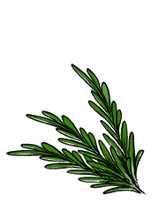

rosemary
Rosemary, or Salvia rosmarinus, is a fragrant evergreen herb with needle-like leaves and white, pink, purple of blue flowers. It's leaves are used to flavor a variety of foods. It's a source of vitamin A and calcium.
Rosemary is very potent, and should be used sparingly. A good technique to remove the leaves, is to hold the stem at the top and to run your fingers along the stem backwards. To keep cuttings of rosemary fresh, wrap in a damp towel. Dried rosemary keeps up to 6 months if stored in an airtight container.